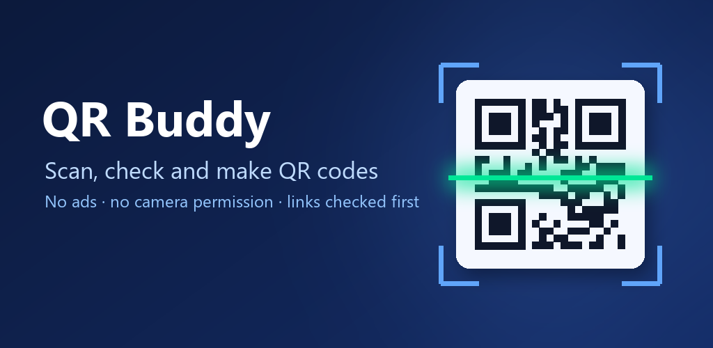
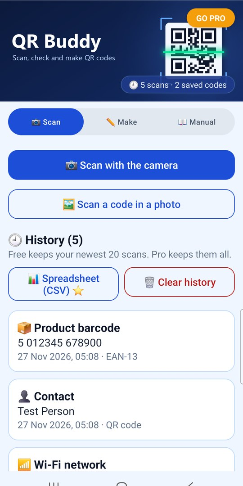
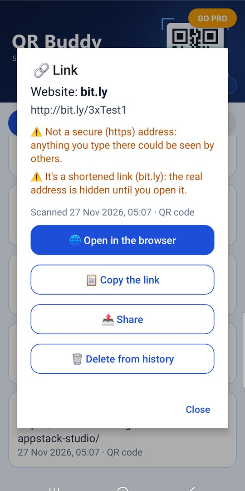
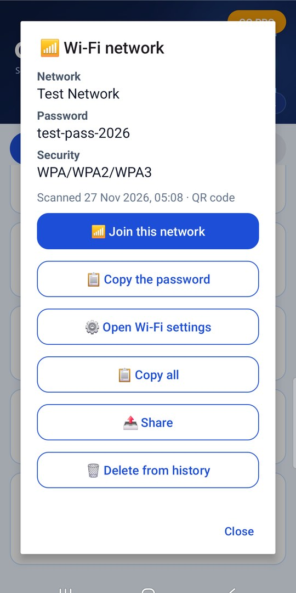
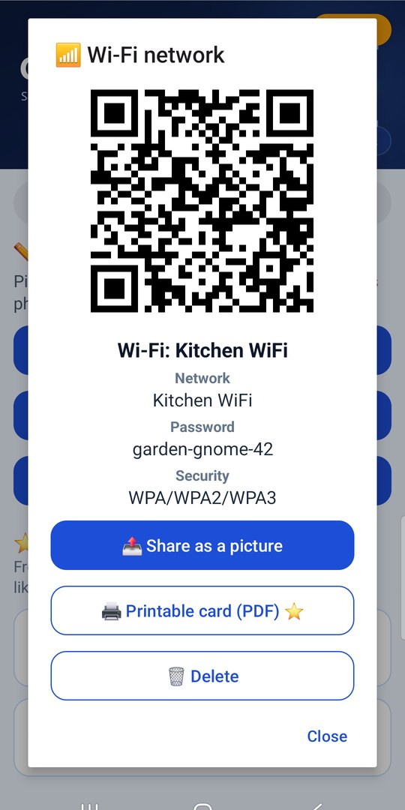

Everything below is the same text as the Manual in the app (📖 Manual tab).
QR Buddy reads QR codes and barcodes and shows you what's in them: a link, a Wi-Fi network, a contact, a phone number, an email, a text, a place, a calendar event or a product number. It also makes QR codes for you to share or print.
The camera screen is Google's code scanner, built into Android through Google Play services. It runs on the phone, so the app doesn't need permission to use your camera.
On 📷 Scan, tap 📷 Scan with the camera and hold the phone so the code is inside the frame. It reads the code by itself.
To read a code in a picture you already have (a screenshot or a photo), tap 🖼️ Scan a code in a photo and pick it. Android's photo picker gives the app only the picture you choose. If a picture holds more than one code, you choose which one.
The first time, Android may take a moment to get the scanner ready.
A link never opens by itself. You see the website name in bold and the whole address first, then tap 🌐 Open in the browser if you want to.
QR Buddy checks the address for warning signs: not a secure (https) address, a shortened link that hides the real address, a number instead of a website name, look-alike letters from other alphabets, an "@" before the website name, website names with many parts, and names ending in .zip or .mov that look like file names. With a warning sign it asks once more before opening.
The checks look at the address only (nothing is looked up online), so no warning isn't proof that a site is safe. Only open links from people and places you trust, and never type passwords or card details on a site you reached from a code you weren't expecting.
Every result can be copied or shared.
Every scan goes into 🕘 History on the 📷 Scan tab, newest first. Tap a scan to see it again, or delete it. 🗑 Clear history deletes all scans (saved codes are kept).
Free keeps your newest 20 scans; older ones are removed as new ones come in. Pro keeps them all, lets you 🔍 Find in history, and gives the 📊 history spreadsheet (CSV) for Excel or Google Sheets.
On ✏️ Make, pick what the code should hold: 🔗 Link, 📶 Wi-Fi, 🔤 Text, 👤 Contact, 📞 Phone or ✉️ Email. Fill in the details and tap Make.
The code shows large on screen, ready for another phone to scan. 📤 Share as a picture saves or sends it as a PNG picture. 💾 Save keeps it under ⭐ Saved codes.
A Wi-Fi code lets guests join your network without typing the password. Check a new code by scanning it with another phone before you print it.
Free: scanning with the camera and from photos, link checks, every action, making all kinds of codes, sharing them as pictures, the newest 20 scans and up to 5 saved codes. No ads.
Pro (one payment, no subscription): the whole history, 🔍 Find in history, the 📊 history spreadsheet, unlimited saved codes, and 🖨️ printable QR cards (PDF): the code large on an A4 page with its details written under it, e.g. a Wi-Fi card for guests.
Tap GO PRO at the top. Restore purchase gets Pro back on a new phone with the same Google account.
No account, no sign-in, and no ads. Your history and saved codes are kept only in the app's own storage on this phone. QR Buddy has no servers: scanning, link checks and making codes all happen on the phone. Something only leaves the phone when you share it, or when you choose to open a link, call, email or join a network.
Uninstalling the app deletes the history and saved codes. Google Play handles the Pro purchase.
QR Buddy v1.0 (Build 1)
Publisher: AppStack Studio
| Question | Many QR apps | QR Buddy |
|---|---|---|
| Ads | Often full-screen ads after each scan | No ads, ever |
| Links | Often open straight away | Shown and checked for warning signs first; open only when you tap Open |
| Permissions | Camera, and sometimes location or phone | No camera, location or contacts permission: Google's scanner hands over only what the code says |
| Price | Weekly or yearly subscriptions | Free scanning and making; Pro is one payment for life (no subscription) |

1. Scan
Scan with the camera or from a photo; every scan in the history.

2. Links checked
The address and its warning signs before anything opens.

3. Wi-Fi
Join with Android's own screen, or copy the password.

4. Make
A Wi-Fi code for guests, ready to show, share or print.
Screenshots: QR Buddy 1.0 on Samsung Galaxy phones, with made-up test codes.